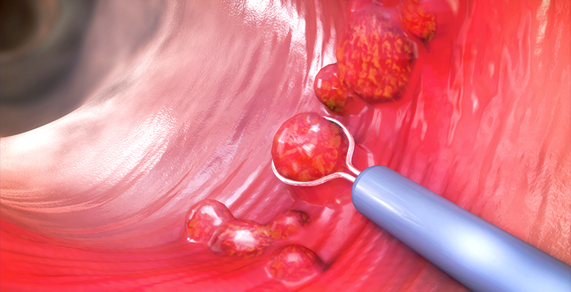

대장내시경
HONGMUN CLINIC

대장 내시경 검사가 필요한 사람은?
한국인의 경우는 서구화된 식습관으로 40세 이상이 되면 증상 없이도 대장암 검진을 시작해야합니다.
(대장암의 가족력이 있는 분은 더 이른 나이에 시작해도 무방합니다)
잔변감으로 화장실을 자주 하는 경우, 만성적인 설사 점액 변 또는 혈변의 경우, 아랫배가 아프거나 수시로 당기는 분은 꼭 검사를 받으셔야 합니다.
대장 내시경이 꼭 필요한 이유는?
어떤 증상이 있을 때 대장암이나 대장염 등 대장질환에 의한 것인지 아니면 대장의 기능적인 다른 원인에 의한 것인지를 확인하기 위해서 검사를
진행하며,
대장암을 예방하기 위해서 대장 용종을 발견하여 미리 제거하는 것이 꼭 필요합니다.
대장암은 대장 용종으로부터 발생되어 대장암으로 진행되는 암으로 알려지고 있어 대장 용종 단계에서 절제하면 대장암을 예방할 수 있습니다. 그 외에 대장암
수술 후의 경과
관찰을 위해서 필요하기도 하고, 궤양성대장염이나 크론씨 질환, 장결핵 등 대장 염증성 질환을 진단하고 치료 도중 경과 관찰하기 위해서도
필수적입니다. 또한 과민성
장 증후군, 만성 변비 등 기능성 장 질환을 진단하기 위해서도 필수적입니다.
대장 내시경 검사는 몇 년에 한번 씩 받는 것이 좋은가요?
보통 2~3년 한 번씩 받으시기를 권고하나, 검사를 용종이나 염증이 발견되신 경험이 있으신 분은 1년에 한 번씩 검사 받으시는 것을 권장하고 있습니다.